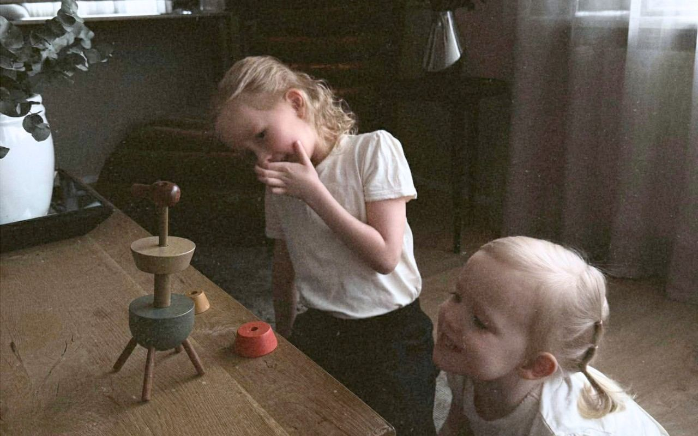

Festivals · Arts
DesignMarch 2027 (HönnunarMars)
- Dates
- –
- Location
- Reykjavík, Iceland
- Format
- In-person
- Category
- Arts
- Industry
- Arts
- Organiser
- Iceland Design and Architecture / HönnunarMiðstöð
- Official website
- https://designmarch.is/
About
Dates are local civil dates in Iceland (Atlantic/Reykjavik).
Topics: design, architecture, design festival, city festival.
No organiser attendance figure found on the official pages fetched 24 Nov 2026. Ranked by our estimated size tier 'medium' (10,000-30,000 attendees/visits), a judgement from format, venue and scale, not an official number.